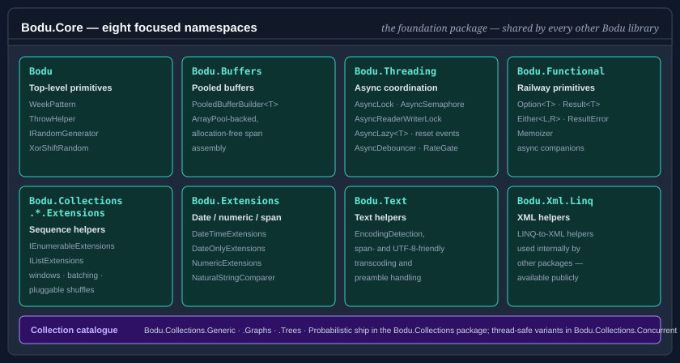

Bodu.Core

Bodu.Core is the foundation package of the Bodu suite and of the Core Foundations topic — a collection of high-performance, framework-style building blocks for .NET applications. Every other Bodu package shares its primitives: Bodu.Collections, Bodu.IO.Hashing, Bodu.Security.Cryptography, Bodu.Globalization.Calendar, Bodu.Numerics, and Bodu.Financial all reference Bodu.Core for shared types like ThrowHelper, WeekPattern, the calendar-shape enums, and pooled buffers. See the package matrix for the full dependency map.
Note
The specialized generic-collection catalogue — CircularBuffer<T>, Deque<T>, EvictingDictionary<TKey,TValue>, the navigable and range-keyed types, graphs, tries, and the probabilistic sketches — ships in the companion Bodu.Collections package (namespaces unchanged; it depends on Bodu.Core), and the thread-safe variants ship in Bodu.Collections.Concurrent (which depends on Bodu.Collections). This page covers what remains in Bodu.Core itself.
The library is organized around a family of focused namespaces, each with a clear responsibility.

Namespaces and headline types
Bodu
Top-level primitives that don't fit into a sub-namespace.
| Type | Purpose |
|---|---|
| WeekPattern | Immutable bitmask value type for sets of days of the week. Supports composition (MTuW), bitwise operators, parsing, and enumeration. |
| IRandomGenerator | Abstraction over random number generators — used by helpers (and the Bodu.Collections catalogue) that need pluggable randomness. |
| XorShiftRandom | Fast non-cryptographic xor-shift PRNG implementing IRandomGenerator. |
| ThrowHelper | Centralized parameter validation: ThrowIfNull, ThrowIfOutOfRange, ThrowIfArrayLengthIsInsufficient, ThrowIfEnumValueIsUndefined, and many more. Uses [CallerArgumentExpression] so call sites stay compact. |
Bodu.Buffers
Pooled buffer infrastructure.
| Type | Purpose |
|---|---|
| PooledBufferBuilder<T> | ArrayPool<T>-backed builder for assembling byte or character spans without allocation. |
Bodu.Threading
Async coordination primitives — the async-friendly peers of the BCL synchronization types. See the Async coordination primitives guide and the Bodu.Threading overview.
| Type | Purpose |
|---|---|
| AsyncLock, AsyncSemaphore, AsyncReaderWriterLock | Awaitable mutual-exclusion and bounded-concurrency gates. |
| AsyncManualResetEvent, AsyncAutoResetEvent, AsyncCountdownEvent | Awaitable signalling events. |
| AsyncLazy<T>, AsyncDebouncer, RateGate | One-time async initialization, trailing-edge debouncing, and rate limiting. |
Bodu.Functional
Functional helpers and railway primitives. See the Memoization and Options, results, and eithers guides and the Bodu.Functional overview.
| Type | Purpose |
|---|---|
| Memoizer | Wraps a pure function in a thread-safe caching delegate (single- and multi-argument). |
| Option<T> | An optional value — Some(value) or None — with Map / Bind / Filter / Match combinators; default equals None. |
| Result, Result<T> | Success-or-failure outcomes carrying a value or a ResultError; default is a failure with an empty error. |
| ResultError | The failure descriptor — optional code, never-null message, optional captured exception. |
| Either<TLeft, TRight> | A symmetric disjoint union with MapLeft / MapRight / Match / Swap; default is an explicit uninitialized state. |
| OptionAsyncExtensions, ResultAsyncExtensions | Task-based MapAsync / BindAsync / MatchAsync (and TapAsync) companions for async pipelines. |
Bodu.Sequences
Lazy sequence factories. See the Bodu.Sequences overview.
| Type | Purpose |
|---|---|
| SequenceGenerator | Lazy generators — Range, NextWhile, Factory — and named mathematical series: Fibonacci, Farey, Leibniz, LookAndSay, ThueMorse. |
Bodu.Collections.Extensions and Bodu.Collections.Generic.Extensions
Sequence-shaping helpers that compose on top of IEnumerable<T> and IList<T>. These extension namespaces ship in Bodu.Core; the concrete collection types in the sibling Bodu.Collections.* namespaces ship in the Bodu.Collections package.
| Type | Purpose |
|---|---|
| IEnumerableExtensions, IEnumerableExtensions | Recursive selection (RecursiveSelect steered by RecursiveSelectControl), CountOrDefault, sliding windows (Windowed), batched enumeration (Batch), and other sequence helpers. |
| IListExtensions | Predicate-driven IndexOf / LastIndexOf, ReplaceAll, and the positional TryMove / TrySwap edits over IList<T>. |
ShuffleHelpers, IEnumerableExtensions.Randomize, SystemRandomAdapter, RandomizationMode |
Pluggable randomness-driven shuffles backed by IRandomGenerator — in-place Shuffle over arrays / spans, lazy ShuffleAndYield, and Randomize over any sequence. ShuffleHelpers lives in Bodu.Collections.Generic but ships in Bodu.Core. |
Bodu.Extensions
Date, numeric, span, and array extension methods. Larger surface than the others; the highlights:
| Type | Purpose |
|---|---|
| DateTimeExtensions | First / last / next / previous day-of-week within month / quarter / year, ISO week-of-year, day name, weekday tests, midday, end-of-day, truncation. |
| DateOnlyExtensions | DateOnly-specific equivalents plus Age calculation. |
| NumericExtensions | ReverseBits, RotateBitsLeft / Right, ReverseBytes, GetBytes for unsigned integer types. |
| ArrayExtensions | Reverse, Clear, and other in-place array helpers. |
| BufferConverter | Byte / structure conversion helpers. |
| SpanExtensions | Span-friendly helpers. |
| ComparableExtensions, ComparableHelper | Min, Max, Clamp, IsGreaterThan / IsGreaterThanOrEqual. |
| NaturalStringComparer | Numeric-aware ("natural") string comparer — file2 sorts before file10 — with ordinal, case-insensitive, and culture-aware modes. See the Natural string comparer guide. |
| CalendarQuarterDefinition, WorkingDaysOfWeek, IWeekendDefinitionProvider, FiscalWeekPattern, WeekOrdinal | Calendar-shape enums and injection seams for quarter, weekend, fiscal-week, and week-ordinal computations. |
Bodu.Globalization.Extensions
Culture-aware date / calendar helpers built on top of DateTimeFormatInfo.
| Type | Purpose |
|---|---|
| DateTimeFormatInfoExtensions | A single helper, LastDayOfWeek() — the day that closes a culture's week, derived from the BCL DateTimeFormatInfo.FirstDayOfWeek. |
Bodu.Text and Bodu.Xml.Linq
Character-encoding helpers over System.Text.Encoding and an XML namespace helper; used internally by the other Bodu packages and available publicly when you need them. See the Bodu.Text introduction and the encoding helpers guide.
| Type | Purpose |
|---|---|
| EncodingDetection | BOM sniffing — TryDetectByPreamble(ReadOnlySpan<byte>, out Encoding?). |
| EncodingExtensions | Extension methods on System.Text.Encoding (preamble handling, UTF / ASCII classification, fallback configuration, rented / owned / pooled buffers), on Encoder / Decoder (chunked transcoding), and on spans (ToBytes, ToChars, DecodeToString, Transcode). |
| StringEncodingExtensions | string fast paths — ToUtf8Bytes, ToBytes(encoding), ToBytesWithPreamble, GetUtf8ByteCount, EncodeUtf8To, WriteUtf8To(IBufferWriter<byte>), and the pooled GetUtf8BytesPooled / GetBytesPooled. |
| XmlNamespaceResolver | IXmlNamespaceResolver helper used by the calendar rule parsers. |
The binary-to-text radix codecs (Base16 … Base85) are not in this package — they ship in the companion Bodu.Text.Encoding package.
Scenarios this library covers
| Scenario | Reach for |
|---|---|
| Day-of-week set you can union / intersect / parse | WeekPattern |
| Pooled byte / char buffer for zero-allocation building | PooledBufferBuilder<T> |
| Async mutual exclusion, signalling, debouncing, rate limiting | AsyncLock, AsyncSemaphore, AsyncDebouncer, RateGate |
| Optional values and success-or-failure outcomes without exceptions | Option<T>, Result<T>, Either<TLeft, TRight> |
| Caching a pure function's results | Memoizer |
| Date arithmetic — first Monday, ISO week-of-year, age | DateTimeExtensions, DateOnlyExtensions |
| Bit / byte rotation and reversal | NumericExtensions |
Sorting file2 before file10 |
NaturalStringComparer |
| Sliding windows, batching, recursive selection over sequences | IEnumerableExtensions, IEnumerableExtensions |
BOM detection, string↔bytes without ceremony, preamble-aware decoding |
EncodingDetection, StringEncodingExtensions, EncodingExtensions |
| Lazy numeric sequences and named series | SequenceGenerator |
| Base16 / Base32 / Base58 / Base64 / Base85 encoding | The Bodu.Text.Encoding package |
| Centralized argument validation in your own code | ThrowHelper |
| Fixed-capacity, evicting, navigable, graph, trie, and sketch collections | The Bodu.Collections package |
| Thread-safe FIFO ring and unique set | The Bodu.Collections.Concurrent package |
Design principles
A handful of conventions run through the whole package; knowing them up front explains why the types look the way they do.
- Validation flows through one helper. Every public entry point validates its arguments through ThrowHelper, so exception type, message, and parameter-name capture stay uniform across the suite.
ThrowHelperis also the primary dependency the other Bodu packages take onBodu.Core. - Honest default values. The railway primitives define what
defaultmeans rather than leaving it undefined:default(Option<T>)isNone,default(Result<T>)is a failure carrying an empty error, anddefault(Either<L,R>)is an explicit uninitialized state — a struct field that was never assigned is well-formed, never a landmine. - Async primitives are awaitable peers, not wrappers. The
Bodu.Threadingtypes re-express the BCL synchronization vocabulary (lock,SemaphoreSlim,ManualResetEvent) as first-class awaitables, so coordination composes withasync/awaitwithout thread blocking. - Pluggable randomness, never a global. Helpers that need randomness accept an IRandomGenerator rather than reaching for a static Random, so tests can inject a deterministic source. Neither shipped implementation is cryptographically secure.
- Span-first surfaces. The buffer builder, the
Bodu.Textencoding helpers, and the extension surfaces preferSpan<T>/ReadOnlySpan<T>overloads with UTF-8 fast paths, so the common cases avoid intermediate allocations.
Where to go next
- Core concepts — glossary the rest of the documentation assumes.
- Getting started — install the package and run a minimal sample for each scenario above.
- Core Foundations guides — recipe-style walk-throughs for the headline types.
- Bodu.Collections introduction — the specialized collection catalogue that builds on this package.
- Bodu.Collections.Concurrent introduction — the thread-safe collection companion.
- Project introduction — how Bodu.Core relates to the hashing, cryptography, calendar, and text libraries (its
ThrowHelperunderpins them all). - Core Foundations topic — Bodu.Core alongside its sibling members, the collection packages and the
Bodu.Textnamespace utilities.